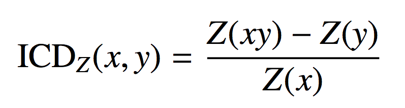
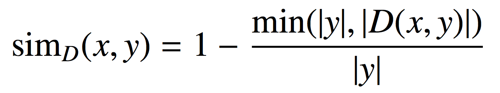
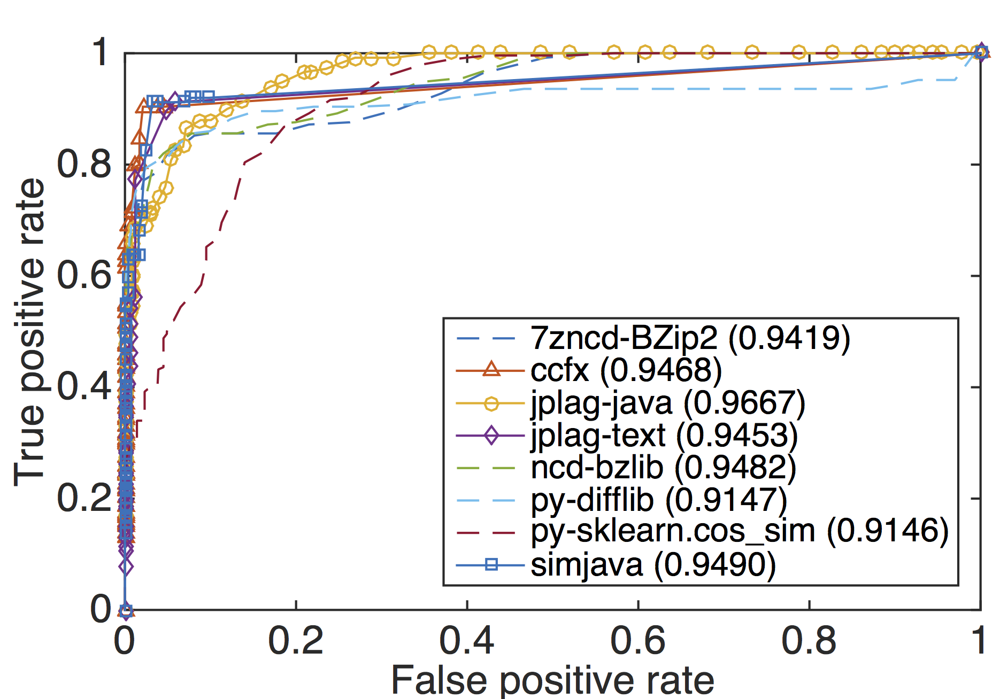

We informally define pervasive code modifications as transformations that may have a global effect but which do not use strong obfuscation. This class of transformations captures those found in code cloning, code plagiarism, and software evolution. We compare 27 similarity detection techniques and tools using five experimental scenarios for Java source code. These are (1) pervasive modifications created with two tools for source code and bytecode obfuscation, (2) source code normalisation through compilation and decompilation using two different decompilers, (3) sets of semantically identical but independently developed code fragments, (4) reused boiler-plate code, and (5) a novel comparison technique that avoids the use of similarity thresholds. Experimental results show that highly specialised source code similarity detection techniques and tools can perform better than more general, textual similarity measures. Our study strongly validates the use of compilation/decompilation as a normalisation technique as its use reduced false classifications to zero for five of the tools. This broad, thorough study is the largest in existence and potentially an invaluable guide for future users of similarity detection.
The general framework of our study as shown below consists of 5 main steps. In Step 1, we collect test data consisting of Java source code files. Next, the source files are transformed by applying pervasive modifications at source and bytecode level. In the third step, all original and transformed source files are normalised. A simple form of normalisation is pretty printing the source files which is used in similarity or clone detection. We also use decompilation. In Step 4, the similarity detection tools are executed pairwise against the set of all normalised files, producing similarity reports for every pair. In the last step, the similarity reports are analysed.
Several tools and techniques were used in this study. These fall into three categories: obfuscators, decompilers, and detectors. The tool set included source and bytecode obfuscators, and two decompilers. The detectors cover a wide range of similarity measurement techniques and methods including plagiarism and clone detection, compression distance, string matching, and information retrieval. All tools are open source in order to expedite the repeatability of our experiments.
| Type | Tool | Link |
|---|---|---|
| Source code obfuscator | Artifice | Download |
| Bytecode obfuscator | ProGuard | Download |
| Decompiler | Krakatau | Download |
| Procyon | Download |
| Tool/technique | Similarity calculation | Link |
|---|---|---|
| Clone detectors | ||
| ccfx | tokens and suffix tree matching | Download |
| deckard | characteristic vectors of AST optimised by LSH iclones tokens and generalised suffix tree | Download |
| nicad | TXL and string comparison (LCS) | Download |
| simian | line-based string comparison | Download |
| Plagiarism detectors | ||
| jplag-java | tokens, Karp Rabin matching, Greedy String Tiling | Download |
| jplag-text | tokens, Karp Rabin matching, Greedy String Tiling | |
| plaggie | N/A (not disclosed) | Download |
| sherlock | digital signatures | Download |
| simjava | tokens and string alignment | Download |
| simtext | tokens and string alignment | |
| Compression |
||
| 7zncd | NCD with 7z | |
| bzip2ncd | NCD with bzip2 | |
| gzipncd | NCD with gzip | |
| icd |  | |
| ncd | ncd tool with bzlib & zlib | Download | Others |
| bsdiff |  | |
| diff | ||
| py-difflib | Gestalt pattern matching | Download |
| py-fuzzywuzzy | fuzzy string matching | Download |
| py-jellyfish | approximate and phonetic matching of strings py-ngram fuzzy search based using n-gram | Download |
| py-sklearn | cosine similarity from machine learning library | Download |
The data set in this scenario is created to simulate pervasive modifications made to source code by using source and bytecode obfuscators: Artifice, and ProGuard. The total number of pervasively modified source code files is 50. The process of code transformations is displayed below.
Data set: we used the data set originally created for the study by Juergens et al. (Juergens, E., Deissenboeck, F., & Hummel, B. (2011). Code similarities beyond copy & paste. Proceedings of the European Conference on Software Maintenance and Reengineering, CSMR, 78–87.)
Data set: the SOCO data set can be obtained from the competition website (http://users.dsic.upv.es/grupos/nle/soco/).
Fixed answer key: the answer key for SOCO java training data set containing 97 pairs of reused code download
We try to avoid this problem of threshold sensitivity completely by proposing a new method to measure tool performance without thresholds. To achieve the goal, we create the "threshold-free classification (TFC)" measurement which shows how well the tool retrieves relevant results with high confidence. To achieve this, we sort the retrieved pairs by measured similarity and consider only the top n pairs with highest similarities, where n is the number of pairs in the ground truth. In the ideal case, all of them are true positives. If a tool mistakenly reports a non-similar pair in the top n pairs, it is considered a false positive. Those pairs from the top n that are also in the ground truth are true positives, all others are false positives. From the number of true and false positives and the number of all pairs, we can compute true and false negatives, giving precision, recall and F-scores.
The table below shows the performance of all the tools and their optimal configurations. Using the F-score, ccfx is the winner with the highest value of 0.90945674.
| Tools | Settings | T | TP | FP | TN | FN | FP+FN | Accuracy | Precision | Recall | F-score |
| ccfx | b=20,21,24,t=1..7 b=22,23,t=7 |
4 | 452 | 42 | 1958 | 48 | 90 | 0.9640 | 0.9150 | 0.9040 | 0.9095 |
| simjava | r=22 | 5 | 456 | 64 | 1936 | 44 | 108 | 0.9568 | 0.8769 | 0.9120 | 0.8941 |
| jplag-text | t=8 | 2 | 448 | 96 | 1904 | 52 | 148 | 0.9408 | 0.8235 | 0.8960 | 0.8582 |
| py-difflib | SM_noautojunk | 35 | 397 | 49 | 1951 | 103 | 152 | 0.9392 | 0.8901 | 0.7940 | 0.8393 |
| 7zncd-BZip2 | mx=1,3,5 | 39 | 386 | 44 | 1956 | 114 | 158 | 0.9368 | 0.8977 | 0.7720 | 0.8301 |
| ncd-bzlib | N/A | 31 | 400 | 66 | 1934 | 100 | 166 | 0.9336 | 0.8584 | 0.8000 | 0.8282 |
| jplag-java | t=3 | 43 | 432 | 142 | 1858 | 68 | 210 | 0.9160 | 0.7526 | 0.8640 | 0.8045 |
| py-sklearn.cosine_similarity | N/A | 33 | 402 | 280 | 1720 | 98 | 378 | 0.8488 | 0.5894 | 0.8040 | 0.6802 |
| 7zncd-default | N/A | 32 | 415 | 116 | 1884 | 85 | 201 | 0.9196 | 0.7815 | 0.8300 | 0.8050 |
| 7zncd-LZMA | mx=7,9 | 33 | 417 | 105 | 1895 | 83 | 188 | 0.9248 | 0.7989 | 0.8340 | 0.8160 |
| 7zncd-LZMA2 | mx=7,9 | 34 | 398 | 74 | 1926 | 102 | 176 | 0.9296 | 0.8432 | 0.7960 | 0.8189 |
| 7zncd-PPMd | mx=9 | 35 | 412 | 108 | 1892 | 88 | 196 | 0.9216 | 0.7923 | 0.8240 | 0.8078 |
| bsdiff | N/A | 71 | 231 | 66 | 1934 | 269 | 335 | 0.8660 | 0.7778 | 0.4620 | 0.5797 |
| bzip2ncd | C=1..9 | 30 | 420 | 102 | 1898 | 80 | 182 | 0.9272 | 0.8046 | 0.8400 | 0.8219 |
| deckard | MINTOKEN=30,STRIDE=2, SIMILARITY=0.95 |
5 | 410 | 44 | 1956 | 90 | 134 | 0.9464 | 0.9030 | 0.8200 | 0.8595 |
| diff | N/A | 7 | 397 | 238 | 1762 | 103 | 341 | 0.8636 | 0.6252 | 0.7940 | 0.6996 |
| gzipncd | C=9 | 25 | 384 | 58 | 1942 | 116 | 174 | 0.9304 | 0.8688 | 0.7680 | 0.8153 |
| iclones | minblock=10,minclone=50 | 0 | 216 | 0 | 2000 | 284 | 284 | 0.8864 | 1.0000 | 0.4320 | 0.6033 |
| icd | ma=Deflate,mx=9 ma=Deflate64,mx=9 |
37 | 360 | 112 | 1888 | 140 | 252 | 0.8992 | 0.7627 | 0.7200 | 0.7407 |
| ncd-zlib | N/A | 23 | 391 | 67 | 1933 | 109 | 176 | 0.9296 | 0.8537 | 0.7820 | 0.8163 |
| nicad | abstract=abstractexpressions, threshold=0.1 |
0 | 274 | 0 | 2000 | 226 | 226 | 0.9096 | 1.0000 | 0.5480 | 0.7080 |
| plaggie | M=7 | 18 | 406 | 83 | 1917 | 94 | 177 | 0.9292 | 0.8303 | 0.8120 | 0.8210 |
| py-fuzzywuzzy | token_set_ratio | 80 | 392 | 68 | 1932 | 108 | 176 | 0.9296 | 0.8522 | 0.7840 | 0.8167 |
| py-jellyfish | jaro_distance | 76 | 322 | 222 | 1778 | 178 | 400 | 0.8400 | 0.5919 | 0.6440 | 0.6169 |
| py-ngram.compare | N/A | 43 | 378 | 76 | 1924 | 122 | 198 | 0.9208 | 0.8326 | 0.7560 | 0.7925 |
| sherlock | N=6,Z=3 | 1 | 396 | 60 | 1940 | 104 | 164 | 0.9344 | 0.8684 | 0.7920 | 0.8284 |
| simian | threshold=5,ignoreIdentifiers | 0 | 388 | 2 | 1998 | 112 | 114 | 0.9544 | 0.9949 | 0.7760 | 0.8719 |
| simtext | r=4 | 17 | 262 | 170 | 1830 | 238 | 408 | 0.8368 | 0.6065 | 0.5240 | 0.5622 |
The ROC curves with their respective AUCs are displayed below. In term of the overall performance across the whole range of T, jplag-java is the best with the highest AUC of 0.9667.
The optimal configurations of the tools can be found from the table above. Specifically, we inspected ccfx's configurations and found the tool has its best configuration while b=20 and t=1..7.
| Tools | generated | Krakatau | Procyon | |||||
| FP | FN | FP | FN | F-score | FP | FN | F-score | |
| ccfx | 42 | 48 | 0 | 0 | 1.0000 | 0 | 4 | 0.9960 |
| deckard | 44 | 90 | 0 | 0 | 1.0000 | 0 | 1 | 0.9837 |
| iclones | 0 | 284 | 0 | 56 | 0.9407 | 0 | 166 | 0.8010 |
| nicad | 0 | 226 | 40 | 24 | 0.9370 | 0 | 72 | 0.9224 |
| simian | 2 | 112 | 2 | 0 | 0.9980 | 14 | 14 | 0.9720 |
| jplag-java | 142 | 68 | 0 | 0 | 1.0000 | 24 | 20 | 0.9562 |
| jplag-text | 96 | 52 | 16 | 0 | 0.9843 | 28 | 8 | 0.9647 |
| plaggie | 83 | 94 | 0 | 0 | 1.0000 | 0 | 40 | 0.9583 |
| sherlock | 60 | 104 | 0 | 0 | 1.0000 | 16 | 0 | 0.9843 |
| simjava | 64 | 44 | 0 | 0 | 1.0000 | 8 | 0 | 0.9921 |
| simtext | 170 | 238 | 0 | 24 | 0.9754 | 58 | 0 | 0.9452 |
| 7zncd-BZip2 | 44 | 114 | 40 | 12 | 0.9494 | 106 | 40 | 0.8630 |
| 7zncd-LZMA | 105 | 83 | 47 | 5 | 0.9501 | 56 | 64 | 0.8790 |
| 7zncd-LZMA2 | 74 | 102 | 47 | 4 | 0.9511 | 56 | 63 | 0.8802 |
| 7zncd-PPMd | 108 | 88 | 49 | 2 | 0.9513 | 52 | 69 | 0.8769 |
| bzip2ncd | 102 | 80 | 40 | 16 | 0.9453 | 90 | 40 | 0.8762 |
| gzipncd | 58 | 116 | 40 | 8 | 0.9535 | 61 | 40 | 0.9011 |
| icd | 112 | 140 | 39 | 93 | 0.8605 | 60 | 93 | 0.8418 |
| ncd-bzlib | 66 | 100 | 46 | 14 | 0.9419 | 88 | 44 | 0.8736 |
| ncd-zlib | 67 | 109 | 50 | 5 | 0.9474 | 61 | 44 | 0.8968 |
| bsdiff | 66 | 269 | 8 | 78 | 0.9075 | 28 | 149 | 0.7986 |
| diff | 238 | 103 | 52 | 65 | 0.8815 | 27 | 76 | 0.8917 |
| py-difflib | 49 | 103 | 16 | 73 | 0.9056 | 12 | 40 | 0.9465 |
| py-fuzzywuzzy | 68 | 108 | 0 | 28 | 0.9712 | 0 | 36 | 0.9627 |
| py-jellyfish | 222 | 178 | 38 | 146 | 0.7937 | 32 | 192 | 0.7333 |
| py-ngram | 76 | 122 | 32 | 56 | 0.9098 | 58 | 64 | 0.8773 |
| py-sklearn | 280 | 98 | 98 | 0 | 0.9107 | 50 | 0 | 0.9524 |
The table below shows the results after applying the optimal configurations obtained from the first data set (generated) to the other two data sets (simions and SOCO). We can see that the optimal configurations from the first data set cannot be applied directly to the other data sets. Hence we searched for the best configurations of these data sets as also displayed in the table.
| Tool/technique | C_generated | C_simions | C_soco | ||||||||
|---|---|---|---|---|---|---|---|---|---|---|---|
| Settings | T | F-score | F-score | F-score | Settings | T | F-score | Settings | T | F-score | |
| ccfx | 20-1 | 4 | 0.9095 | 0.0435 | 0.1164 | 16-7 | 83 | 0.9945 | 45-1..7 | 28 | 0.9403 |
| simjava | 22 | 5 | 0.8941 | 0.0190 | 0.1527 | 10..28 | 96 | 0.9909 | 21 | 46 | 0.9682 |
| jplag-text | 8 | 2 | 0.8484 | 0.0182 | 0.0687 | 1/2/03 | 94 | 0.9863 | 9 | 32 | 0.9691 |
| py-difflib | noautojunk | 35 | 0.8370 | 0.0182 | 0.4943 | noautojunk, nowhitespace_autojunk, nowhitespace_noautojunk |
98 | 0.9909 | nowhitespace_noautojunk | 49 | 0.9560 |
| 7zncd-BZip2 | 1 | 39 | 0.8301 | 0.0183 | 0.3505 | 1/3/05 | 85 | 0.9909 | 1..6 | 65 | 0.8344 |
| ncd-bzlib | N/A | 31 | 0.8282 | 0.0182 | 0.2898 | N/A | 87 | 1.0000 | N/A | 52 | 0.8816 |
| jplag-java | 3 | 43 | 0.7873 | 0.0224 | 0.0675 | 2..12 | 99 | 0.9820 | 9 | 44 | 0.9497 |
| py-sklearn | N/A | 33 | 0.6005 | 0.0186 | 0.0496 | N/A | 99 | 1.0000 | N/A | 70 | 0.8671 |
The graph visualises the same results of applying the optimal configurations from generated data set to other data sets (in term of F-scores).
The results after using the TFC to compare the tools' performance are displayed below.
| Tool | FN | F-score | FN | F-score | FN | F-score | FN | F-score |
| 7zncd-BZip2 | 91 | 0.8180 | 2 | 0.9817 | 67 | 0.8431 | 88 | 0.8057 |
| ccfx | 48 | 0.9040 | 0 | 1.0000 | 43 | 0.8993 | 28 | 0.9382 |
| jplag-java | 107 | 0.7860 | 4 | 0.9633 | 54 | 0.8735 | 28 | 0.9382 |
| jplag-text | 78 | 0.8440 | 0 | 1.0000 | 33 | 0.9227 | 16 | 0.9647 |
| ncd-bzlib | 90 | 0.8200 | 0 | 1.0000 | 51 | 0.8806 | 68 | 0.8499 |
| py-difflib | 96 | 0.8080 | 0 | 1.0000 | 28 | 0.9344 | 27 | 0.9404 |
| py-sklearn | 190 | 0.6200 | 0 | 1.0000 | 48 | 0.8876 | 60 | 0.8675 |
| simjava | 58 | 0.8840 | 0 | 1.0000 | 26 | 0.9391 | 17 | 0.9625 |
Last update: 3 September 2015.